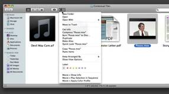
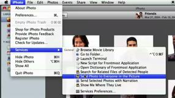
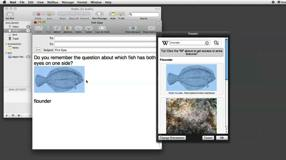
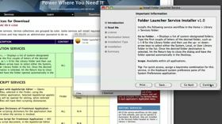

Podcasts from MacBreak
MacBreak offers weekly video podcasts of interest to Mac users, covering a wide variety of topics. Join Product Manager for Automation Technologies, Sal Soghoian, and host Alex Lindsay, as they explore creative uses of AppleScript, Services, and Automator.
|
235 • Services in Snow Leopard  A walk-through of the features of the revamped Services architecture in Mac OS X Snow Leopard. |
 Examples of how services could be used with iPhoto's face recognition feature. |
 Using the power of Services to become Web-centric rather than browser-centric. |
||
|
238 • Folder Navigation Service  Demonstrating how to install and configure a folder navigation service. |
|
|
DISCLAIMER: Mention of third-party websites and products is for informational purposes only and constitutes neither an endorsement nor a recommendation. MACOSXAUTOMATION.COM assumes no responsibility with regard to the selection, performance or use of information or products found at third-party websites. MACOSXAUTOMATION.COM provides this only as a convenience to our users. MACOSXAUTOMATION.COM has not tested the information found on these sites and makes no representations regarding its accuracy or reliability. There are risks inherent in the use of any information or products found on the Internet, and MACOSXAUTOMATION.COM assumes no responsibility in this regard. Please understand that a third-party site is independent from MACOSXAUTOMATION.COM and that MACOSXAUTOMATION.COM has no control over the content on that website. Please contact the vendor for additional information. All videos are linked with the expressed permission of their respective owners.